Side project · 產品設計與開發
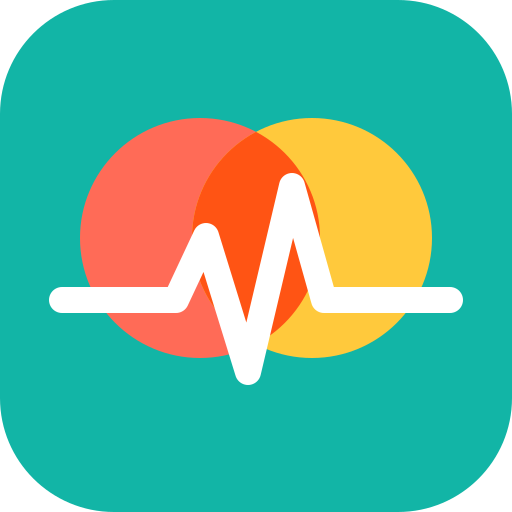
把訓練和飲食放在同一個地方看。給我和另一半每天使用的健身紀錄工具，我擔任產品經理，和 AI 協作，從問題定義、設計、開發、資安檢查一路做到上線。
可直接操作 · 資料是虛構的，不會連到任何真實帳號
Problem
想回答「這週練了多少、吃了多少、體重有沒有往目標走」，卻要在好幾個 App 之間切換、自己心算。
重訓記在筆記、跑步在 Strava、體重在 Apple 健康、飲食在另一個 App，彼此的關係看不出來。
市售 App 各管一塊，要整合通常得訂閱多個服務，資料也存在別人的伺服器上。
國外的營養資料庫查不到便當、小吃和在地包裝食品，記錄不準就失去參考價值。
重訓一組一組輸入、每餐查營養素，只要多幾個步驟，記錄就容易中斷。
Goals
每個功能進來之前，都先對照這五個目標。
Process
每個階段都先在測試版自己用過，確認沒問題才升級正式版。飲食整合這一段前後經過 25 個測試版。
Decisions
多數決策都在「自己做」和「整合現成服務」之間選擇，原則是先用最低成本驗證，確定值得再加深。
| 議題 | 採用 | 考慮過 | 原因 |
|---|---|---|---|
| 運動紀錄存哪裡 | 使用者自己的 Google 雲端硬碟 | 自建資料庫 | 零成本、資料歸使用者，開發者碰不到別人的資料 |
| 飲食功能 | 自架 SparkyFitness ＋ 轉接層 | 自己從頭開發 | 營養分析已有成熟開源方案；轉接層可以先低成本驗證 |
| 主機 | 先用 PikaPods 託管 | 家裡現有的 NAS | 先用託管快速上線，之後換新的 NAS 再搬回家 |
| 跑步資料 | Strava → Apple 健康 → Sparky | 訂閱 Strava 直接串接 | 不需要額外訂閱，同時也拿到 Apple 健康的體重與消耗 |
| 食物資料 | 衛福部食藥署資料＋Open Food Facts | FatSecret、Nutritionix | 台灣食物收錄完整，授權適合個人使用 |
| 金鑰保管 | 轉接層加密保存 | 放在瀏覽器 | 資安審查的 P1 項目；換裝置不用重新輸入 |
| 線上路跑 | 先不做 | 每週自動收錄 | 評估後決定先不做，需要時可以手動新增賽事 |
Architecture
沒有自己的資料庫。App 是一個靜態網頁，運動紀錄放在使用者的雲端硬碟，飲食透過轉接層存到自架系統。
Screens
以下畫面都使用示範版的虛構資料。可以左右滑動。
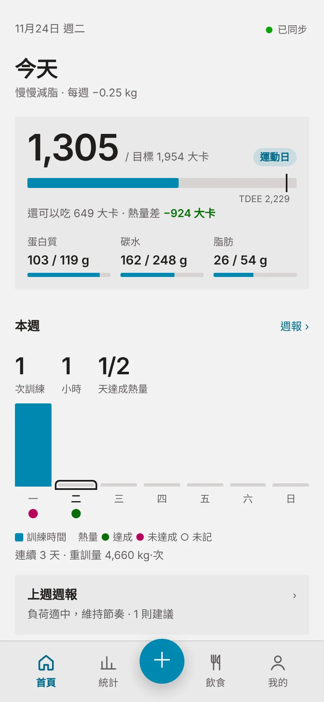
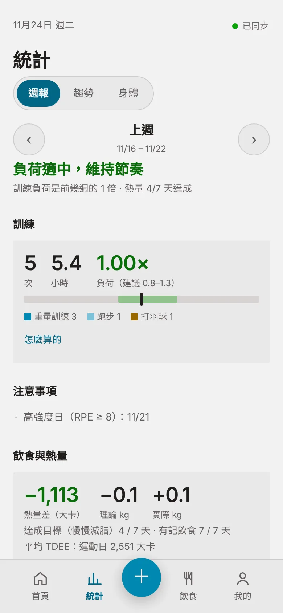
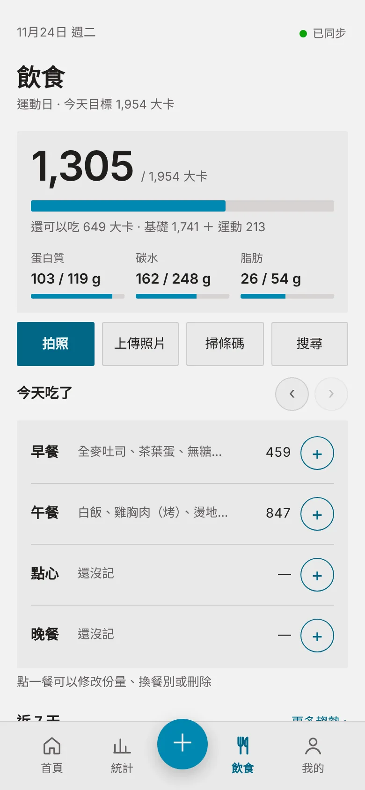
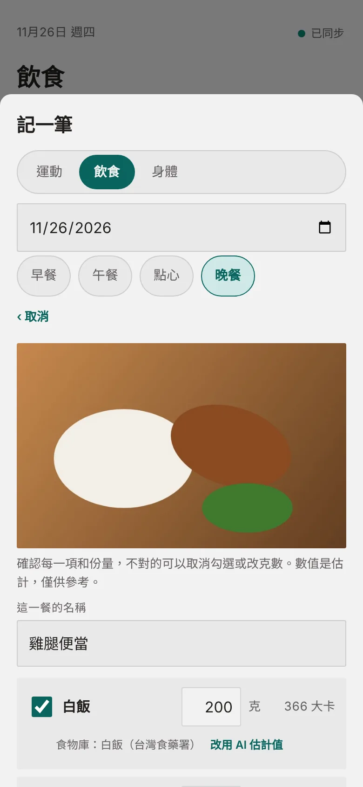
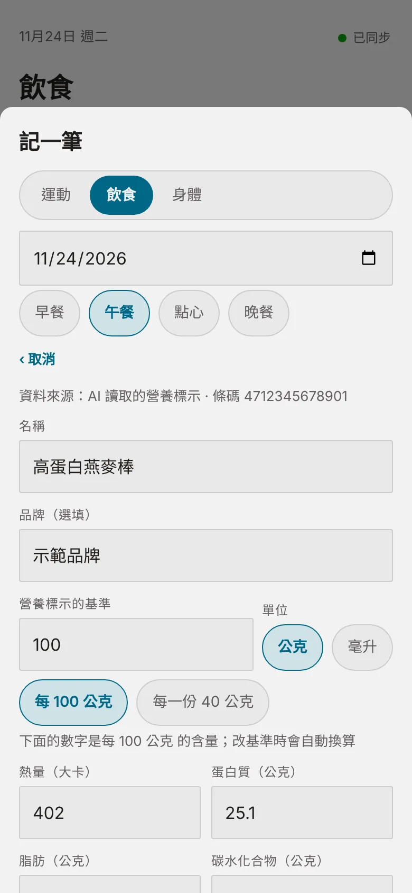
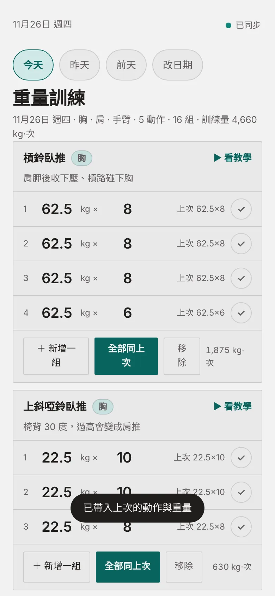
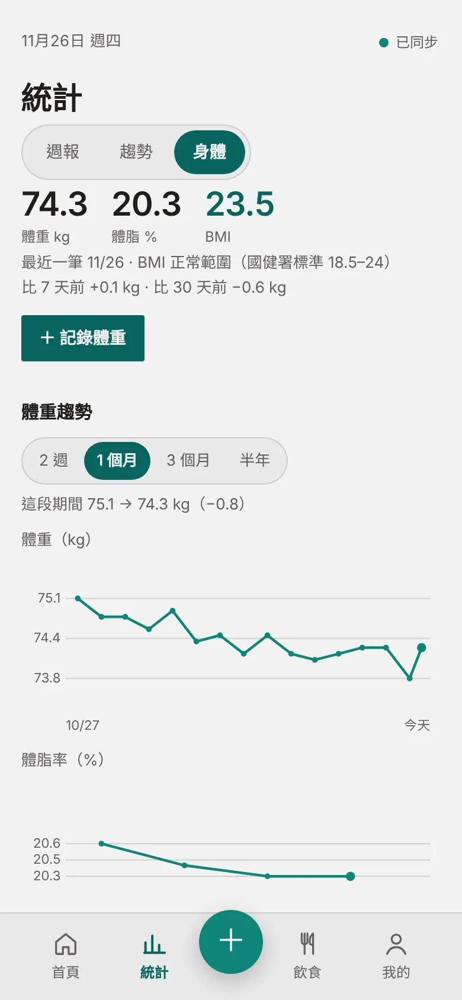
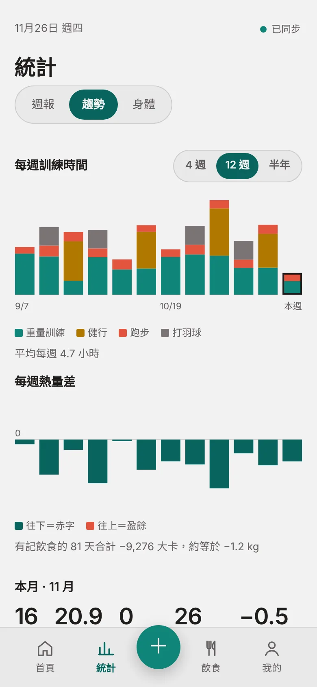
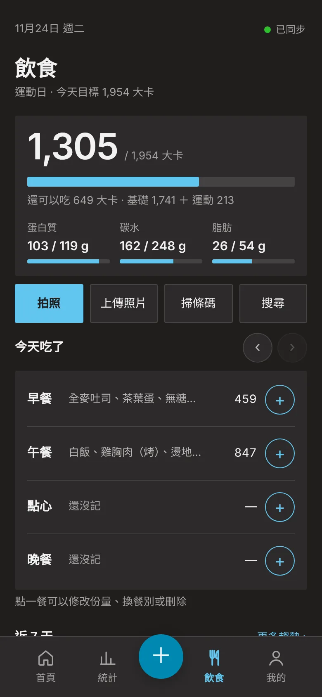
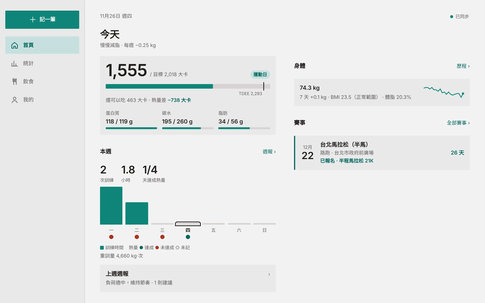
Learnings
飲食功能先用免費的轉接層和現成系統驗證，確定每天真的會用，才投入拍照辨識、條碼與 TDEE。
每個版本都先在獨立的測試版實際使用，資料與正式版分開，確認沒問題才升級。
上線前做外部審查並實測跨帳號存取，找到上游系統的漏洞後在轉接層補上防護。
下一步